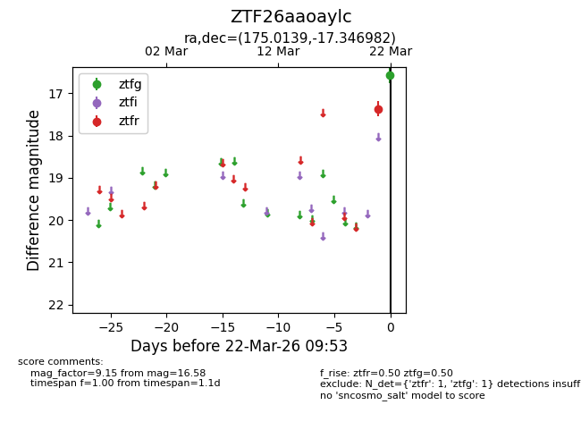
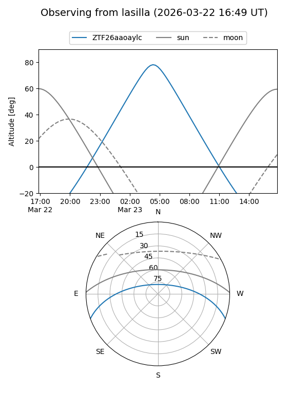
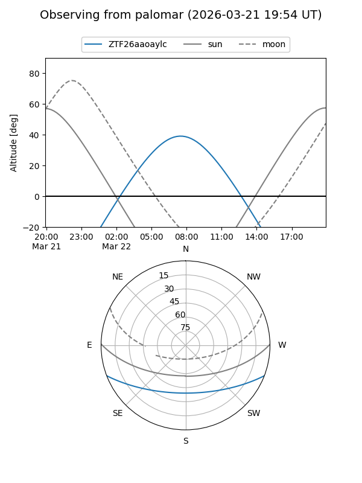

ZTF26aaoaylc
Target ZTF26aaoaylc at 2026-03-22 09:55
Aliases and brokers:
FINK: link
Lasair: link
ALeRCE: link
alt names
ZTF26aaoaylc (ztf,fink_ztf)
Coordinates:
equatorial (ra, dec) = 175.0139,-17.34698
equatorial (HMS+DMS) = 11:40:03.33,-17:20:49.14
galactic (l, b) = (279.6457,+42.27424)
Flags:
Photometry:
last ztfg=16.58, ztfr=17.36
1 ztfg, 1 ztfr detections
Lightcurve

Visibility


Additional plots